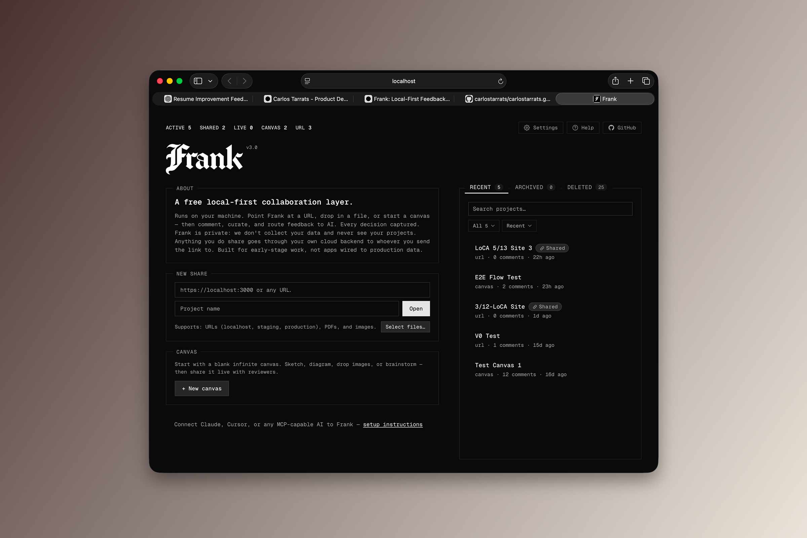
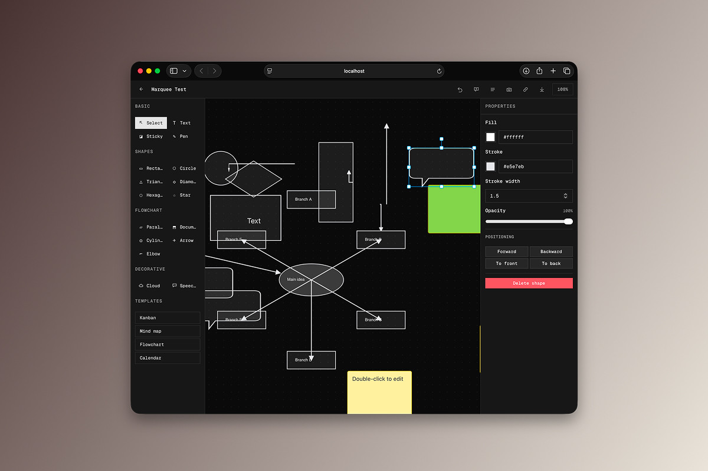
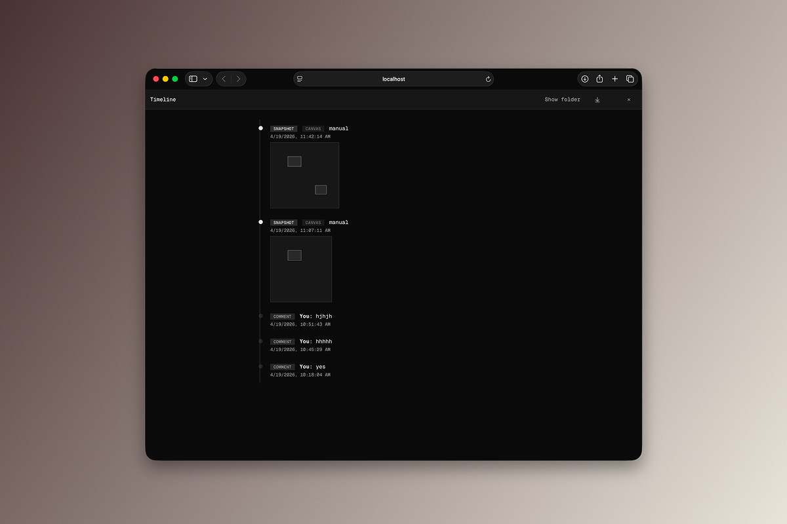
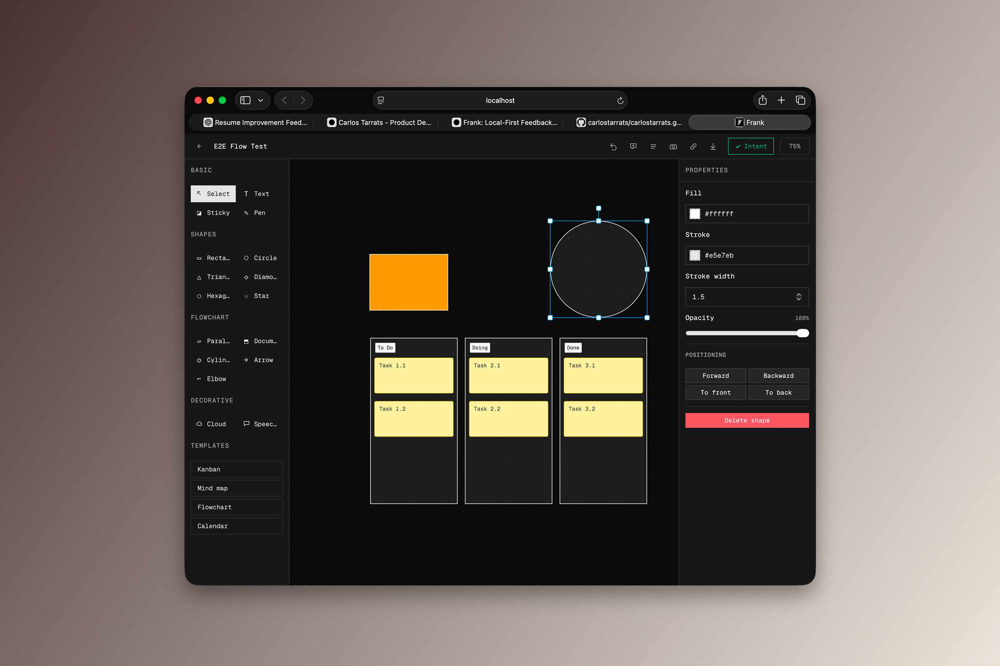
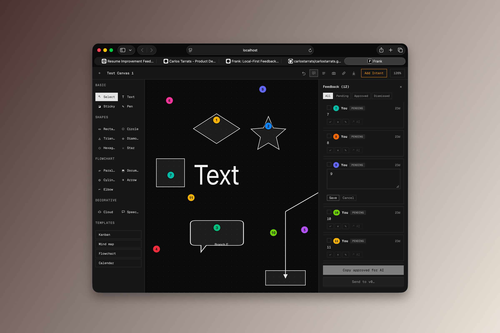
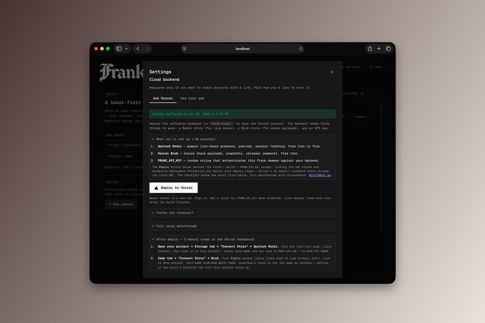
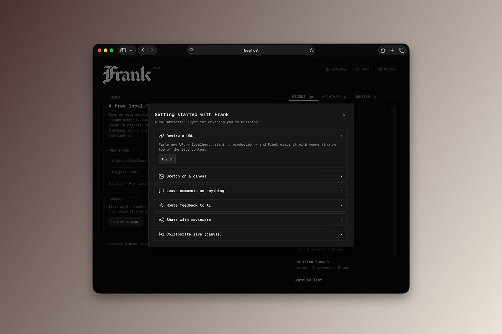

Frank — Local-first collaboration layer for things that aren't on the internet yet
Frank runs on your machine. Point it at a URL, drop in a file, or start a blank canvas — then comment on what you see, curate the feedback, and route it to the AI tools you already use. Every decision is captured. Nothing leaves your computer unless you explicitly share. A local collaboration layer for things that aren't on the internet yet.








Why I Built It
The idea started as a terminal helper for basic wireframing — a quick CLI for throwing rough frames on screen. That slowly turned into something bigger. Sharing those frames locally became the interesting problem.
What I wanted was something local and easy for getting feedback on unfinished projects. Built for small builders — people like me who don't want or need to live inside big SaaS tools. I saw a use case that wasn't being served and figured I could try it.
What It Does
Four entry points, one feedback loop. Frank is a terminal tool — you start it from the command line and it opens a browser-based UI at localhost:42068.
- Wrap any URL. Point Frank at localhost, a Vercel preview, or production. Click any element on the page to anchor a comment. A triple-anchor (CSS selector + DOM path + visual coordinates) keeps comments attached through refactors. Frank detects navigation inside the iframe and automatically proxies sites that block embedding.
- Drop a file. PDF or image (PNG, JPG, GIF, WEBP, SVG, up to 50MB). Frank opens it in a viewer and anchors comments to coordinates. Images support wheel-zoom.
- Start a canvas. An infinite Konva-backed canvas with a full shape library — rectangle, circle, ellipse, triangle, diamond, hexagon, star, cloud, speech, document, cylinder — plus text, sticky notes, freehand pen, arrows, and elbow connectors that follow their source and target as you drag. One-click Kanban / Mindmap / Flowchart / Calendar templates. Drag-and-drop image placement. Shape-anchored comment pins that move with their shape.
- Curate and route. Approve, dismiss, or remix each comment. Set a project brief so Frank tells the AI what you're actually trying to build — not just a list of notes stripped of context.
From there, three paths to hand feedback to AI:
- MCP server. Frank exposes 15 tools to Claude, Cursor, or any MCP client.
- Copy as prompt. A structured prompt lands on your clipboard. Paste it anywhere.
- Export. JSON, Markdown, or PDF — comments, curations, bookmarks, and the full AI decision trail.
Sharing is optional. Async links work for any project type, and a live canvas share streams every shape edit to open viewers in near real time over SSE. You host the backend. A one-click Vercel reference implementation is included; any host implementing the seven-endpoint Cloud API contract works.
How It Works
Two packages. One local, one cloud.
The local daemon is Node.js + TypeScript and serves an HTTP + WebSocket server, an MCP stdio bridge, a content proxy, a content-addressed asset store, canvas state I/O, and a bundle / report builder. Everything is written to ~/.frank/ on your machine.
The browser UI is plain JS ES modules with no build step — Konva loads via a script tag. jsPDF and svg2pdf are loaded from CDN on first export.
The optional cloud package is a small Vercel serverless project with Vercel Blob for payloads and Upstash Redis for live-share presence. Canvas exports go through Konva → SVG → svg2pdf for vector PDF; project reports go through pdfmake.
Local-First
Local by default. Project data, canvas state, uploaded files, image assets, and the full curation log stay in ~/.frank/ on your machine.
No telemetry, no analytics, no accounts. Frank makes no AI calls of its own — routing to AI happens over MCP, clipboard, or export, which means you pick the model and the terms.
API keys live in ~/.frank/config.json with 0600 permissions and never land in logs. Sharing is opt-in: when you share, a snapshot goes to your Blob storage and live-share state goes to your Redis. Frank's infrastructure is not in the loop.
The daemon warns before sharing if it detects emails, API keys, or passwords in the page.